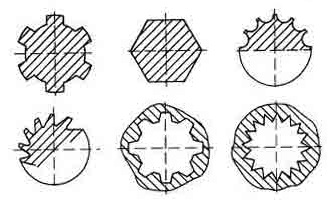
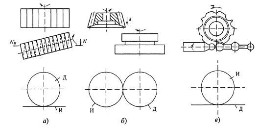
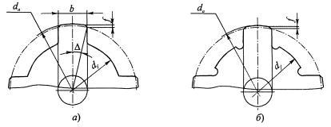

Метод обкаточного огибания, использованный при проектировании червячных зуборезных фрез и долбяков для нарезания колес с эвольвентным профилем зубьев, используется также и для изготовления деталей типа тел вращения с зубьями (шлицами), расположенными на наружной или внутренней поверхности и имеющими различную форму профиля в сечении, перпендикулярном к оси, а также деталей с многократно повторяющимся профилем, например валов с фасонной поверхностью в осевом сечении и др.
На рисунке приведено несколько примеров профилей таких деталей, которые при обработке по методу обката являются огибающими семейства профилей режущих кромок инструмента. Практическое применение нашли следующие инструменты, работающие по методу обката: червячные фрезы, долбяки и обкаточные резцы. Их достоинствами являются высокая производительность и точность формы изготавливаемых деталей. К недостаткам можно отнести возможность обработки деталей только данного типоразмера и высокую стоимость инструмента. Таким образом, они являются специальными инструментами и их применение экономически оправдано только в условиях крупносерийного и массового производств.
В основе формирования профилей деталей этими инструментами лежит принцип обката и взаимного огибания профилей инструмента и детали при качении без скольжения их центроид. Центроидой червячных фрез (а) является начальная прямая И, а детали - окружность Д. При обработке долбяками (б) центроидами являются две окружности: И и Д. При точении обкаточными резцами (в) центроида инструмента - окружность И, а детали - прямая Д, параллельная оси и касательная к профилю детали.
Наибольшее применение в машиностроении нашли червячные фрезы для нарезания фасонных зубьев на наружных поверхностях деталей: шлицевые валы, звездочки передач, храповые колеса и т.д.
Долбяки используются в основном для нарезания зубьев на внутренних поверхностях, а также на наружных поверхностях при работе "в упор", например при наличии фланцев или на ступенчатых деталях. По производительности долбяки уступают червячным фрезам, но более эффективны при малой длине обработки.
Обкаточные резцы применяют относительно редко: при точении длинных маложестких фасонных валиков, например различных рукояток. Кинематика такого резания показана на рис. 1.19, в, откуда следует, что для такой обработки необходим специальный или оснащенный приспособлением токарный станок.
При проектировании обкаточного режущего инструмента основной задачей является профилирование режущих кромок по заданному профилю детали. При этом, прежде чем приступить к ее решению, необходимо проверить возможность получения данного профиля детали методом огибания.
На позиции (а) центроида детали, она же начальная окружность, может занимать положения I и II относительно детали, прямолинейный профиль которой в положении I может быть обработан только на участке аb. Участок профиля выше точки b по методу огибания может быть обработан только при положении II центроиды, т.е. при положении I нормали к профилю детали на участке bc не пересекают центроиду.
На позиции (б) показано, что режущие кромки двух участков профиля пересекаются между собой, зуб инструмента заостряется и не может обработать деталь на требуемую глубину.
При ломаном прямолинейном профиле на стыках неизбежно образуются переходные кривые (рис. 1.20, в), которые уменьшают границы правильной обработки профиля. Необходимо, чтобы эти кривые не превосходили допустимых пределов по условиям эксплуатации детали.
Пример выполнения третьего условия обката приведен на позиции (г). Здесь центроидой инструмента - обкаточного резца - является окружность И, а центроидой детали - прямая Д. При совпадении последней с участком I детали нормали к участкам I и II последовательно пересекают центроиду Д а нормали к участку III пересекаются с ними в теле детали. Следовательно, профиль I-II-III может быть полностью обработан методом обката.
Решение задачи профилирования рассмотрим на примере червячных шлиценарезных фрез, получивших наибольшее распространение на практике.
Профилирование червячных фрез при нарезании прямобочных шлицев. Из известных типов шлицев самое широкое применение нашли прямобочные шлицы с прямолинейной образующей боковой поверхности. При этом образующие двух сторон шлица параллельны и при своем продолжении касаются условной окружности в центре с радиусом, равным половине толщины шлица b / 2. Параметрами профиля шлицевого вала в сечении, перпендикулярном его оси, являются: диаметры наружной d a и внутренней d f окружностей, радиус начальной окружности r w толщина шлица b, угол профиля Δ = arcsin [( b / 12 ) · r w.

Шлицевые соединения вала и втулки технологичны в изготовлении и удобны в сборке. Они
стандартизированы и делятся на две группы:
1) с посадкой по наружному диаметру d
f (а);
2) с посадкой по внутреннему диаметру d f (б).
Для облегчения сборки на вершине шлицев снимают фаски шириной f x 45°. Поэтому диаметр dw начальной окружности шлицевых валов несколько меньше диаметра da наружной окружности. У шлицевых соединений с посадкой по наружному диаметру у основания шлицев вала образуются переходные кривые (галтели), которые должны размещаться в зазоре между внутренними диаметрами вала и втулки. Такие галтели недопустимы при посадке по внутреннему диаметру. Они заменяются выемками - поднутрениями у основания шлицев, которые, кроме того, служат местом выхода шлифовального круга, когда валы изготавливают термически обработанными. При этом шлифовке подвергаются внутренняя окружность и боковые стороны шлицев.
Обычно профиль червячной фрезы в нормальном сечении N-N принимается равным профилю рейки, сопряженной с профилем детали. Хотя это приближенный метод профилирования, так как, строго говоря, зацепление имеет пространственный характер, получаемая погрешность вполне укладывается в пределы допусков на точность изготовления профиля детали. При этом следует иметь в виду, что указанная погрешность тем меньше, чем меньше угол подъема витков фрезы т, который принимают равным не более 6°.
Известны два метода решения задачи профилирования: графический и аналитический.
Габаритные размеры фрезы и некоторые конструктивные и геометрические параметры, указываемые на рабочем чертеже, принимают по ГОСТ 8027-86 или по рекомендациям для червячных фрез с затылованными зубьями.